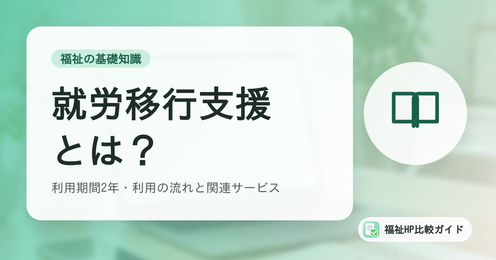

就労移行支援とは？対象者・利用期間2年・利用の流れと、就労定着支援・就労選択支援との関係

就労移行支援は、一般企業などへの就職を目指す障害のある方が、職業訓練や就職活動の支援を受けられるサービスです。「働きたいけれど、いきなり就職するのは不安」という方の準備の場として利用されています。
この記事でわかること
- 就労移行支援の目的と、受けられる支援
- 対象者と標準利用期間（原則2年）
- 利用開始までの流れと利用料
- 就職後の就労定着支援、就労選択支援との関係
就労移行支援とは
就労移行支援は、障害者総合支援法の「訓練等給付」にもとづくサービスです。一般企業などで働くことを希望する障害のある方に、一定の期間、就職に必要な知識や能力を身につける訓練と、就職活動の支援を行います。
主な支援内容は次のとおりです。
- 基礎訓練：生活リズムの安定、体調管理、通所の習慣づけ
- 職業訓練：パソコン操作、事務作業、軽作業、コミュニケーションやビジネスマナー
- 職場体験・実習：企業での実習を通じた適性の確認
- 就職活動の支援：自己理解、応募書類の作成、面接練習、求人の紹介、ハローワークとの連携
- 就職後の定着支援：就職後6か月間は、就労移行支援事業所が職場への定着を支援
対象となる方
就労を希望する65歳未満の障害のある方で、通常の事業所に雇用されることが可能と見込まれる方が対象です。身体障害、知的障害、精神障害、発達障害、難病などの方が利用できます。障害者手帳がなくても、医師の診断などにより市町村が認めれば利用できる場合があります。
65歳以上の方
65歳に達する前の5年間に障害福祉サービスの支給決定を受けていたなど、一定の条件を満たす場合は、65歳以上でも利用できることがあります。市町村に確認してください。
利用期間は原則2年
就労移行支援の標準利用期間は2年間です。市町村が必要と認めた場合は、最大1年間の延長が認められることがあります。
限られた期間で就職を目指すサービスのため、事業所を選ぶときは、どのような段階を経て就職を目指すのか、計画の立て方を確認しておくことが大切です。
利用開始までの流れ
- 情報収集・見学：複数の事業所を見学・体験し、雰囲気や訓練内容を比べる
- 市町村に申請：障害福祉担当窓口でサービスの利用を申請する
- サービス等利用計画案の作成：相談支援専門員と一緒に作成する（本人が作るセルフプランの場合もある）
- 支給決定・受給者証の交付：市町村が利用を決定し、受給者証が交付される
- 事業所と契約・利用開始：個別支援計画を作成し、訓練を始める
相談支援専門員の役割は「計画相談支援とは」で解説しています。
利用料
利用者負担は原則1割ですが、本人と配偶者の所得に応じた負担上限月額があり、多くの方が無料で利用しています。
| 世帯の区分 | 負担上限月額 |
|---|---|
| 生活保護受給世帯 | 0円 |
| 市町村民税非課税世帯 | 0円 |
| 市町村民税課税世帯（所得割16万円未満） | 9,300円 |
| 上記以外 | 37,200円 |
昼食代や交通費などは事業所によって扱いが異なります。交通費の助成を行っている自治体もあります。
就労定着支援・就労選択支援との関係
| サービス | 利用する時期 | 内容 |
|---|---|---|
| 就労選択支援 | 就労系サービスを使い始める前 | 作業場面でのアセスメントなどを通じて、本人に合った働き方を一緒に考える |
| 就労移行支援 | 就職に向けた準備期間（原則2年） | 訓練と就職活動の支援 |
| 就労定着支援 | 就職して6か月が経過した後（最長3年） | 職場での困りごとの相談、生活面の支援、企業との調整 |
就労選択支援は2025年10月に始まった新しいサービスです。就労移行支援については、2027年4月から新たに利用する方は原則として就労選択支援を利用する予定とされています（自治体の案内による）。就職後の支援については「就労定着支援とは」で詳しく解説しています。
事業所選びで確認したいこと
- 就職実績：過去の就職者数と、就職後6か月以上の定着状況
- 訓練内容：希望する仕事に近い訓練があるか（事務、IT、軽作業など）
- 得意とする障害特性：精神障害、発達障害など、支援の経験が豊富な分野
- 企業実習の機会：連携している企業や実習先の種類
- 通いやすさ：最寄り駅からの距離、通所日数の調整
- 就職後のサポート：就労定着支援を事業所で実施しているか
就労移行支援の基本報酬は、就職後6か月以上職場に定着した人の割合などによって決まる仕組みです。定着の実績は、事業所の支援の質を判断するひとつの材料になります。
まとめ
就労移行支援は、一般企業への就職を目指す65歳未満の障害のある方が、原則2年の期間で訓練と就職活動の支援を受けられるサービスです。就職後は就労定着支援へとつながり、2027年4月からは利用前の就労選択支援が原則となる予定です。
事業所を選ぶときは、就職と定着の実績、訓練内容、得意な支援分野を見学で確認しましょう。
よくある質問
就労移行支援を利用している間、収入はありますか？
就労移行支援は訓練の場のため、原則として給与や工賃は支払われません（生産活動を行う事業所では工賃が支払われる場合もあります）。利用中の生活費については、障害年金や家族の支援、各種手当などを組み合わせて考える必要があります。
2年で就職できなかった場合はどうなりますか？
市町村が必要と認めた場合に、最大1年間利用期間を延長できることがあります。延長が認められない場合は、就労継続支援A型・B型など、ほかのサービスへの移行を相談支援専門員と一緒に検討します。
在職中や休職中でも利用できますか？
原則として一般就労を目指す方が対象ですが、休職中の方が復職に向けて利用できる場合があります。企業や主治医の意見、市町村の判断が必要になるため、事前に市町村の窓口に相談してください。
参考資料・出典
制度・料金・統計は改定される場合があります。最新の内容は各出典の公式情報でご確認ください。